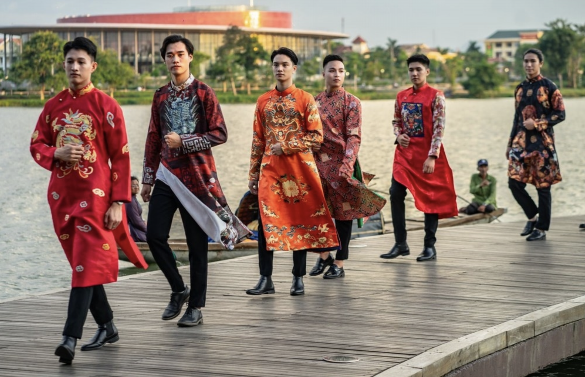

Lễ hội Huế là những sự kiện văn hóa đặc sắc, mang đậm bản sắc lịch sử và truyền thống của thành phố cố đô này. Là nơi từng là kinh đô của triều Nguyễn, Huế tổ chức nhiều lễ hội đặc trưng, vừa phản ánh nét đẹp văn hóa cung đình, vừa gìn giữ các giá trị dân gian truyền thống. Một trong những lễ hội lớn nhất là Festival Huế, được tổ chức hai năm một lần vào khoảng tháng 4 hoặc tháng 5. Đây là lễ hội lớn nhất tại Huế, kéo dài từ vài ngày đến một tuần, với các hoạt động văn hóa và nghệ thuật đa dạng như diễu hành, biểu diễn âm nhạc, múa, triển lãm và các chương trình văn hóa truyền thống. Festival Huế không chỉ tôn vinh nghệ thuật cung đình mà còn giới thiệu các giá trị văn hóa đặc sắc của Huế và các vùng miền khác.
Ngoài Festival Huế, Lễ hội đền Hùng diễn ra vào tháng 3 âm lịch hàng năm để tưởng nhớ các vua Hùng, những người sáng lập ra dân tộc Việt Nam. Lễ hội này tại Huế diễn ra trang trọng với các nghi lễ truyền thống, diễu hành và các hoạt động văn hóa dân gian đặc sắc.
Lễ hội Minh Mạng là dịp để người dân Huế tưởng nhớ vua Minh Mạng, vị vua thứ hai triều Nguyễn, vào ngày giỗ của ông (20 tháng 1 âm lịch). Lễ hội này được tổ chức tại lăng Minh Mạng với các nghi thức dâng hương, tế lễ, và những hoạt động văn hóa mang đậm nét truyền thống.
Vào đêm rằm tháng Giêng, người dân Huế lại cùng nhau tham gia Lễ hội Nguyên Tiêu, một lễ hội cầu an, dâng hương và thưởng thức các màn múa lân, sư rồng, cùng nhiều trò chơi dân gian đặc sắc.
Không thể không nhắc đến Lễ hội Tết Nguyên Đán, dịp lễ trọng đại nhất của người Việt. Tết ở Huế không chỉ là thời gian để các gia đình sum họp mà còn là dịp tổ chức các nghi lễ cúng tổ tiên, dâng lễ vật, và tham gia các hoạt động vui chơi, múa lân, đốt pháo, cùng với những buổi biểu diễn nghệ thuật đặc sắc.
Một lễ hội khác cũng rất đặc biệt là Lễ hội áo dài Huế, tôn vinh trang phục truyền thống của người Việt, đặc biệt là áo dài Huế. Lễ hội này thu hút sự tham gia của nhiều người, với các buổi trình diễn áo dài, cùng các hoạt động văn hóa, nghệ thuật liên quan đến trang phục truyền thống của dân tộc.
Các lễ hội Huế không chỉ là dịp để người dân nơi đây thể hiện tình yêu với quê hương mà còn là cơ hội để du khách gần xa khám phá và cảm nhận rõ nét hơn về lịch sử, văn hóa, và những giá trị truyền thống đặc sắc của mảnh đất cố đô này.